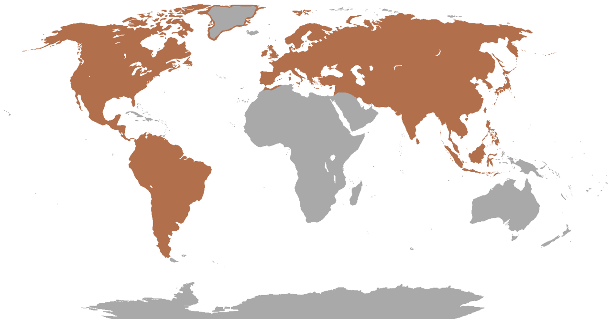
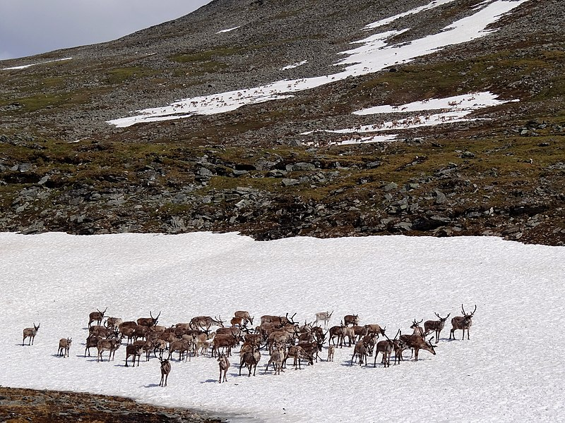
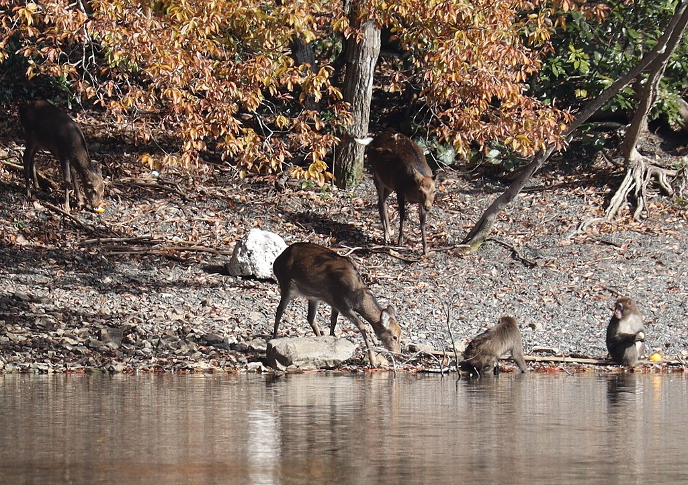
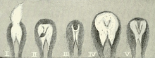
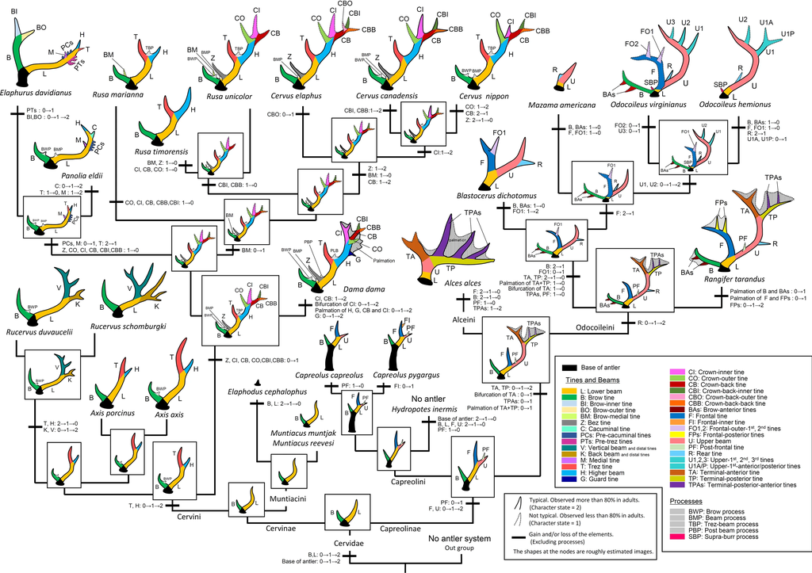
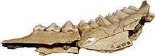
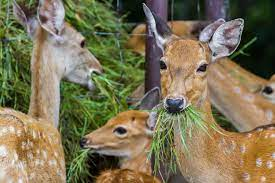

Deer
Deer or true deer are hoofed ruminant mammals forming the family Cervidae. The two main groups of deer are the Cervinae, including the muntjac, the elk (wapiti), the red deer, and the fallow deer; and the Capreolinae, including the reindeer (caribou), white-tailed deer, the roe deer, and the moose. Male deer of all species (except the water deer) as well as female reindeer, grow and shed new antlers each year. In this they differ from permanently horned antelope, which are part of a different family (Bovidae) within the same order of even-toed ungulates (Artiodactyla).
The musk deer (Moschidae) of Asia and chevrotains (Tragulidae) of tropical African and Asian forests are separate families that are also in the ruminant clade Ruminantia; they are not especially closely related to Cervidae.
Deer appear in art from Paleolithic cave paintings onwards, and they have played a role in mythology, religion, and literature throughout history, as well as in heraldry, such as red deer that appear in the coat of arms of Åland. Their economic importance includes the use of their meat as venison, their skins as soft, strong buckskin, and their antlers as handles for knives. Deer hunting has been a popular activity since the Middle Ages and remains a resource for many families today.
Etymology and terminology
The word deer was originally broad in meaning, becoming more specific with time. Old English dēor and Middle English der meant a wild animal of any kind. Cognates of Old English dēor in other dead Germanic languages have the general sense of animal, such as Old High German tior, Old Norse djur or dȳr, Gothic dius, Old Saxon dier, and Old Frisian diar. This general sense gave way to the modern English sense by the end of the Middle English period, around 1500. All modern Germanic languages save English and Scots retain the more general sense: for example, German Tier and Norwegian dyr mean animal.
For many types of deer in modern English usage, the male is a buck and the female a doe, but the terms vary with dialect, and according to the size of the species. The male red deer is a stag, while for other large species the male is a bull, the female a cow, as in cattle. In older usage, the male of any species is a hart, especially if over five years old, and the female is a hind, especially if three or more years old. The young of small species is a fawn and of large species a calf; a very small young may be a kid. A castrated male is a havier.[6] A group of any species is a herd. The adjective of relation is cervine; like the family name Cervidae, this is from Latin: cervus, meaning stag or deer.
Distribution
Deer live in a variety of biomes, ranging from tundra to the tropical rainforest. While often associated with forests, many deer are ecotone species that live in transitional areas between forests and thickets (for cover) and prairie and savanna (open space). The majority of large deer species inhabit temperate mixed deciduous forest, mountain mixed coniferous forest, tropical seasonal/dry forest, and savanna habitats around the world. Clearing open areas within forests to some extent may actually benefit deer populations by exposing the understory and allowing the types of grasses, weeds, and herbs to grow that deer like to eat. Access to adjacent croplands may also benefit deer. Adequate forest or brush cover must still be provided for populations to grow and thrive.
Deer are widely distributed, with indigenous representatives in all continents except Antarctica and Australia, though Africa has only one native deer, the Barbary stag, a subspecies of red deer that is confined to the Atlas Mountains in the northwest of the continent. Another extinct species of deer, Megaceroides algericus, was present in North Africa until 6000 years ago. Fallow deer have been introduced to South Africa. Small species of brocket deer and pudús of Central and South America, and muntjacs of Asia generally occupy dense forests and are less often seen in open spaces, with the possible exception of the Indian muntjac. There are also several species of deer that are highly specialized and live almost exclusively in mountains, grasslands, swamps, and "wet" savannas, or riparian corridors surrounded by deserts. Some deer have a circumpolar distribution in both North America and Eurasia. Examples include the caribou that live in Arctic tundra and taiga (boreal forests) and moose that inhabit taiga and adjacent areas. Huemul deer (taruca and Chilean huemul) of South America's Andes fill the ecological niches of the ibex and wild goat, with the fawns behaving more like goat kids.
The highest concentration of large deer species in temperate North America lies in the Canadian Rocky Mountain and Columbia Mountain regions between Alberta and British Columbia where all five North American deer species (white-tailed deer, mule deer, caribou, elk, and moose) can be found. This region has several clusters of national parks including Mount Revelstoke National Park, Glacier National Park (Canada), Yoho National Park, and Kootenay National Park on the British Columbia side, and Banff National Park, Jasper National Park, and Glacier National Park (U.S.) on the Alberta and Montana sides. Mountain slope habitats vary from moist coniferous/mixed forested habitats to dry subalpine/pine forests with alpine meadows higher up. The foothills and river valleys between the mountain ranges provide a mosaic of cropland and deciduous parklands. The rare woodland caribou have the most restricted range living at higher altitudes in the subalpine meadows and alpine tundra areas of some of the mountain ranges. Elk and mule deer both migrate between the alpine meadows and lower coniferous forests and tend to be most common in this region. Elk also inhabit river valley bottomlands, which they share with White-tailed deer. The White-tailed deer have recently expanded their range within the foothills and river valley bottoms of the Canadian Rockies owing to conversion of land to cropland and the clearing of coniferous forests allowing more deciduous vegetation to grow up the mountain slopes. They also live in the aspen parklands north of Calgary and Edmonton, where they share habitat with the moose. The adjacent Great Plains grassland habitats are left to herds of elk, American bison, and pronghorn.
 The Eurasian Continent (including the Indian Subcontinent) boasts the most species of deer in the world, with most species being found in Asia. Europe, in comparison, has lower diversity in plant and animal species. Many national parks and protected reserves in Europe have populations of red deer, roe deer, and fallow deer. These species have long been associated with the continent of Europe, but also inhabit Asia Minor, the Caucasus Mountains, and Northwestern Iran. "European" fallow deer historically lived over much of Europe during the Ice Ages, but afterwards became restricted primarily to the Anatolian Peninsula, in present-day Turkey.
Present-day fallow deer populations in Europe are a result of historic man-made introductions of this species, first to the Mediterranean regions of Europe, then eventually to the rest of Europe. They were initially park animals that later escaped and reestablished themselves in the wild. Historically, Europe's deer species shared their deciduous forest habitat with other herbivores, such as the extinct tarpan (forest horse), extinct aurochs (forest ox), and the endangered wisent (European bison). Good places to see deer in Europe include the Scottish Highlands, the Austrian Alps, the wetlands between Austria, Hungary, and the Czech Republic, and some National Parks, including Doñana National Park in Spain, the Veluwe in the Netherlands, the Ardennes in Belgium, and Białowieża National Park in Poland. Spain, Eastern Europe, and the Caucasus Mountains have forest areas that are not only home to sizable deer populations but also other animals that were once abundant such as the wisent, Eurasian lynx, Iberian lynx, wolves, and brown bears
The highest concentration of large deer species in temperate Asia occurs in the mixed deciduous forests, mountain coniferous forests, and taiga bordering North Korea, Manchuria (Northeastern China), and the Ussuri Region (Russia). These are among some of the richest deciduous and coniferous forests in the world where one can find Siberian roe deer, sika deer, elk, and moose. Asian caribou occupy the northern fringes of this region along the Sino-Russian border.
Deer such as the sika deer, Thorold's deer, Central Asian red deer, and elk have historically been farmed for their antlers by Han Chinese, Turkic peoples, Tungusic peoples, Mongolians, and Koreans. Like the Sami people of Finland and Scandinavia, the Tungusic peoples, Mongolians, and Turkic peoples of Southern Siberia, Northern Mongolia, and the Ussuri Region have also taken to raising semi-domesticated herds of Asian caribou.
The highest concentration of large deer species in the tropics occurs in Southern Asia in India's Indo-Gangetic Plain Region and Nepal's Terai Region. These fertile plains consist of tropical seasonal moist deciduous, dry deciduous forests, and both dry and wet savannas that are home to chital, hog deer, barasingha, Indian sambar, and Indian muntjac. Grazing species such as the endangered barasingha and very common chital are gregarious and live in large herds. Indian sambar can be gregarious but are usually solitary or live in smaller herds. Hog deer are solitary and have lower densities than Indian muntjac. Deer can be seen in several national parks in India, Nepal, and Sri Lanka of which Kanha National Park, Dudhwa National Park, and Chitwan National Park are most famous. Sri Lanka's Wilpattu National Park and Yala National Park have large herds of Indian sambar and chital. The Indian sambar are more gregarious in Sri Lanka than other parts of their range and tend to form larger herds than elsewhere.
Description
Deer constitute the second most diverse family of artiodactyla after bovids. Though of a similar build, deer are strongly distinguished from antelopes by their antlers, which are temporary and regularly regrown unlike the permanent horns of bovids. Characteristics typical of deer include long, powerful legs, a diminutive tail and long ears.[10] Deer exhibit a broad variation in physical proportions. The largest extant deer is the moose, which is nearly 2.6 metres (8 ft 6 in) tall and weighs up to 800 kilograms (1,800 lb).[11][12] The elk stands 1.4–2 metres (4 ft 7 in – 6 ft 7 in) at the shoulder and weighs 240–450 kilograms (530–990 lb).[13] The northern pudu is the smallest deer in the world; it reaches merely 32–35 centimetres (12+1⁄2–14 in) at the shoulder and weighs 3.3–6 kilograms (7+1⁄4–13+1⁄4 lb). The southern pudu is only slightly taller and heavier.[14] Sexual dimorphism is quite pronounced – in most species males tend to be larger than females,[15] and, except for the reindeer, only males possess antlers.
Coat colour generally varies between red and brown, though it can be as dark as chocolate brown in the tufted deer or have a grayish tinge as in elk. Different species of brocket deer vary from gray to reddish brown in coat colour. Several species such as the chital, the fallow deer and the sika deer feature white spots on a brown coat. Coat of reindeer shows notable geographical variation.[23] Deer undergo two moults in a year; for instance, in red deer the red, thin-haired summer coat is gradually replaced by the dense, greyish brown winter coat in autumn, which in turn gives way to the summer coat in the following spring. Moulting is affected by the photoperiod.
Deer are also excellent jumpers and swimmers. Deer are ruminants, or cud-chewers, and have a four-chambered stomach. Some deer, such as those on the island of Rùm, do consume meat when it is available. Nearly all deer have a facial gland in front of each eye. The gland contains a strongly scented pheromone, used to mark its home range. Bucks of a wide range of species open these glands wide when angry or excited. All deer have a liver without a gallbladder. Deer also have a tapetum lucidum, which gives them sufficiently good night vision.
Antlers
All male deer possess antlers, with the exception of the water deer, in which males have long tusk-like canines that reach below the lower jaw. Females generally lack antlers, though female reindeer bear antlers smaller and less branched than those of the males. Occasionally females in other species may develop antlers, especially in telemetacarpal deer such as European roe deer, red deer, white-tailed deer and mule deer and less often in plesiometacarpal deer. A study of antlered female white-tailed deer noted that antlers tend to be small and malformed, and are shed frequently around the time of parturition.
The fallow deer and the various subspecies of the reindeer have the largest as well as the heaviest antlers, both in absolute terms as well as in proportion to body mass (an average of eight grams per kilogram of body mass); the tufted deer, on the other hand, has the smallest antlers of all deer, while the pudú has the lightest antlers with respect to body mass (0.6 g per kilogram of body mass).[30] The structure of antlers show considerable variation; while fallow deer and elk antlers are palmate (with a broad central portion), white-tailed deer antlers include a series of tines sprouting upward from a forward-curving main beam, and those of the pudú are mere spikes. Antler development begins from the pedicel, a bony structure that appears on the top of the skull by the time the animal is a year old. The pedicel gives rise to a spiky antler the following year, that is replaced by a branched antler in the third year. This process of losing a set of antlers to develop a larger and more branched set continues for the rest of the life. The antlers emerge as soft tissues (known as velvet antlers) and progressively harden into bony structures (known as hard antlers), following mineralisation and blockage of blood vessels in the tissue, from the tip to the base.
Antlers might be one of the most exaggerated male secondary sexual characteristics, and are intended primarily for reproductive success through sexual selection and for combat. The tines (forks) on the antlers create grooves that allow another male's antlers to lock into place. This allows the males to wrestle without risking injury to the face. Antlers are correlated to an individual's position in the social hierarchy and its behaviour. For instance, the heavier the antlers, the higher the individual's status in the social hierarchy, and the greater the delay in shedding the antlers; males with larger antlers tend to be more aggressive and dominant over others. Antlers can be an honest signal of genetic quality; males with larger antlers relative to body size tend to have increased resistance to pathogens and higher reproductive capacity. In elk in Yellowstone National Park, antlers also provide protection against predation by wolves. Homology of tines, that is, the branching structure of antlers among species, have been discussed before the 1900s. Recently, a new method to describe the branching structure of antlers and determining homology of tines was developed.
Teeth
Most deer bear 32 teeth; the corresponding dental formula is: 0.0.3.3 3.1.3.3 . The elk and the reindeer may be exceptions, as they may retain their upper canines and thus have 34 teeth (dental formula: 0.1.3.3 3.1.3.3 ).[44] The Chinese water deer, tufted deer, and muntjac have enlarged upper canine teeth forming sharp tusks, while other species often lack upper canines altogether. The cheek teeth of deer have crescent ridges of enamel, which enable them to grind a wide variety of vegetation.[45] The teeth of deer are adapted to feeding on vegetation, and like other ruminants, they lack upper incisors, instead having a tough pad at the front of their upper jaw.
Biology
Diet
Deer are browsers, and feed primarily on foliage of grasses, sedges, forbs, shrubs and trees, secondarily on lichens in northern latitudes during winter. They have small, unspecialized stomachs by ruminant standards, and high nutrition requirements. Rather than eating and digesting vast quantities of low-grade fibrous food as, for example, sheep and cattle do, deer select easily digestible shoots, young leaves, fresh grasses, soft twigs, fruit, fungi, and lichens. The low-fibered food, after minimal fermentation and shredding, passes rapidly through the alimentary canal. The deer require a large amount of minerals such as calcium and phosphate in order to support antler growth, and this further necessitates a nutrient-rich diet. There are some reports of deer engaging in carnivorous activity, such as eating dead alewives along lakeshores or depredating the nests of northern bobwhites.
